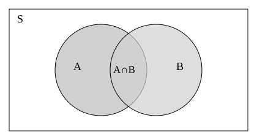
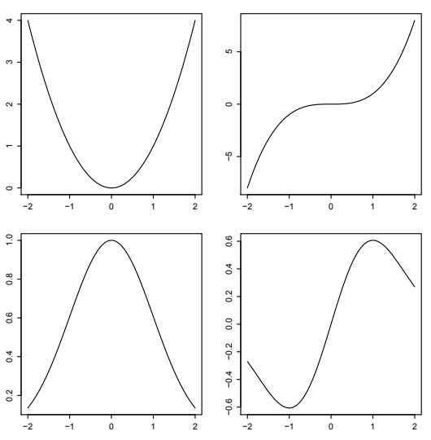
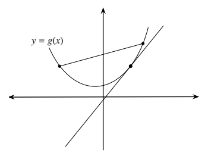

부록 A — 수학
A.1 집합
집합이란 하나로 생각될 수 있는 여럿이다.
— 게오르크 칸토어
집합은 객체들의 모임이다. 객체는 수, 사람, 고양이, 강좌, 심지어 다른 집합 등 무엇이든 될 수 있다! 집합의 언어를 사용하면 사건을 정확하게 이야기할 수 있다. \(S\)가 집합일 때 \(x\in S\)라는 표기는 \(x\)가 집합 \(S\)의 원소 또는 구성원임을 나타낸다. \(x\notin S\)는 \(x\)가 \(S\)에 속하지 않음을 나타낸다. 집합을 구성원 자격에 관한 기준이 정확하게 정해진 동호회라고 생각할 수 있다. 예를 들면 다음과 같다.
- \(\{1,3,5,7,\ldots\}\)은 양의 홀수의 집합이다.
- \(\mathbb R\)은 모든 실수의 집합이다.
- \(\{\text{워프},\text{잭},\text{토비}\}\)는 조의 고양이들의 집합이다.
- \([3,7]\)은 3과 7 사이의 모든 실수로 이루어진 닫힌구간이다.
- \(\{HH,HT,TH,TT\}\)는 동전을 두 번 던질 때 가능한 모든 결과의 집합이다. 예를 들어 \(HT\)는 첫 번째 던지기에서 앞면, 두 번째 던지기에서 뒷면이 나왔음을 뜻한다.
원소를 일일이 나열하기가 번거롭거나 불가능할 때 집합을 설명하려면 가능한 각 객체가 집합에 속하는지 여부를 알려 주는 규칙을 제시할 수 있다. 예를 들어 \(\{(x,y)\in\mathbb R^2:x^2+y^2\leq1\}\)은 평면 \(\mathbb R^2\)에서 원점을 중심으로 하는 반지름 1인 원판이다. 이 표현에서 ‘:’는 ‘~인’ 또는 ‘~을 만족하는’으로 읽는다.
A.1.1 공집합
가장 작은 집합이자 미묘하면서도 중요한 집합은 공집합이다. 공집합에는 원소가 전혀 없으며 \(\varnothing\) 또는 \(\{\}\)로 나타낸다. \(\varnothing\)과 \(\{\varnothing\}\)를 혼동하지 않도록 주의하자. 전자에는 원소가 없지만 후자에는 원소가 하나 있다. 공집합을 빈 종이봉투로 시각화한다면 \(\{\varnothing\}\)는 종이봉투 안에 종이봉투가 들어 있는 것으로 시각화할 수 있다.
A.1.2 부분집합
\(A,B\)가 집합일 때 \(A\)의 모든 원소가 \(B\)의 원소이기도 하면 \(A\)를 \(B\)의 부분집합이라고 하며 \(A\subseteq B\)로 쓴다. 예를 들어 모든 정수의 집합은 모든 실수의 집합의 부분집합이다. \(\varnothing\)과 \(A\) 자신은 항상 \(A\)의 부분집합이다. 이들은 부분집합의 양 극단이다. \(A\subseteq B\)임을 보이는 일반적인 전략은 \(x\)를 \(A\)의 임의의 원소로 놓고 \(x\)가 반드시 \(B\)의 원소이기도 함을 보이는 것이다. 두 집합 \(A,B\)에 대해 \(A=B\)임을 보이는 일반적인 전략은 각각이 다른 하나의 부분집합임을 보이는 것이다.
A.1.3 합집합, 교집합, 여집합
두 집합 \(A,B\)의 합집합은 \(A\cup B\)로 쓰며, \(A\) 또는 \(B\)에 속하는 모든 객체의 집합이다. 둘 모두에 속하는 경우도 포함한다. \(A,B\)의 교집합은 \(A\cap B\)로 쓰며, \(A\)와 \(B\) 모두에 속하는 모든 객체의 집합이다. \(A\cap B=\varnothing\)이면 \(A\)와 \(B\)가 서로소라고 한다. \(n\)개의 집합 \(A_1,\ldots,A_n\)에 대해 합집합 \(A_1\cup A_2\cup\cdots\cup A_n\)은 적어도 하나의 \(A_j\)에 속하는 모든 객체의 집합이고, 교집합 \(A_1\cap A_2\cap\cdots\cap A_n\)은 모든 \(A_j\)에 속하는 객체의 집합이다.
많은 응용에서는 다루는 모든 집합이 어떤 집합 \(S\)의 부분집합이다. 확률에서는 \(S\)가 어떤 실험의 가능한 모든 결과의 집합일 수 있다. 문맥상 \(S\)가 명확하면 집합 \(A\)의 여집합을 \(S\)에 속하면서 \(A\)에는 속하지 않는 모든 객체의 집합으로 정의하며 \(A^c\)로 나타낸다.
합집합, 교집합, 여집합은 아래와 같은 벤 다이어그램으로 쉽게 시각화할 수 있다. 합집합은 색칠된 영역 전체이고, 교집합은 \(A\)와 \(B\) 양쪽에 속하는 점들로 이루어진 미식축구공 모양의 영역이다. \(A\)의 여집합은 직사각형 안에서 \(A\) 밖에 있는 모든 점이다.

\(A\cup B\) 영역의 넓이는 \(A\)의 넓이와 \(B\)의 넓이를 더한 뒤 \(A\cap B\)의 넓이를 뺀 것과 같음에 주목하자. 이는 포함배제원리의 기본 형태이다.
드모르간의 법칙은 합집합과 교집합 사이의 우아하고 유용한 쌍대성을 제시한다.
\[ \begin{aligned} (A_1\cup A_2\cup\cdots\cup A_n)^c&=A_1^c\cap A_2^c\cap\cdots\cap A_n^c,\\ (A_1\cap A_2\cap\cdots\cap A_n)^c&=A_1^c\cup A_2^c\cup\cdots\cup A_n^c. \end{aligned} \]
드모르간의 법칙은 암기하는 것보다 이해하는 것이 훨씬 더 중요하다! 첫 번째 법칙은 \(A_j\) 중 적어도 하나에 속한다는 것이 성립하지 않는 것은 \(A_1\)에도 속하지 않고 \(A_2\)에도 속하지 않고 \(A_3\)에도 속하지 않는 것 등과 같다고 말한다.
예를 들어 \(j\in\{1,2,3\}\)에 대해 \(A_j\)를 스타워즈 프리퀄의 \(j\)번째 영화를 좋아하는 사람의 집합이라 하자. 그러면 \((A_1\cup A_2\cup A_3)^c\)는 프리퀄 중 적어도 하나를 좋아한다는 것이 성립하지 않는 사람들의 집합이다. 그런데 이는 《보이지 않는 위험》도 좋아하지 않고, 《클론의 습격》도 좋아하지 않고, 《시스의 복수》도 좋아하지 않는 사람들의 집합인 \(A_1^c\cap A_2^c\cap A_3^c\)와 같다.
두 번째 법칙은 모든 \(A_j\)에 속한다는 것이 성립하지 않는 것은 적어도 하나의 \(A_j\) 바깥에 있는 것과 같다고 말한다. 예를 들어 \(A_j\)를 앞 문단과 같이 정의하자. 스타워즈 프리퀄을 모두 좋아한다는 것이 성립하지 않는다면, 즉 \((A_1\cap A_2\cap A_3)^c\)에 속한다면, 좋아하지 않는 프리퀄이 적어도 하나 있어야 한다. 이는 \(A_1^c\cup A_2^c\cup A_3^c\)에 속한다는 뜻이며 그 역도 성립한다.
다음 집합에 관한 사실들을 증명하는 것은 좋은 연습이다. 벤 다이어그램은 직관을 기르는 데 매우 유용하지만 단지 그림을 그리는 데 그치지 말고 증명해 보자.
- \(A\cap B\)와 \(A\cap B^c\)는 서로소이며 \((A\cap B)\cup(A\cap B^c)=A\)이다.
- \(A\cap B=A\)일 필요충분조건은 \(A\subseteq B\)이다.
- \(A\subseteq B\)일 필요충분조건은 \(B^c\subseteq A^c\)이다.
A.1.4 분할
집합 \(S\)의 부분집합들의 모임 \(A_1,\ldots,A_n\)이 \(A_1\cup\cdots\cup A_n=S\)이고 모든 \(i\ne j\)에 대해 \(A_i\cap A_j=\varnothing\)이면 이 모임은 \(S\)의 분할이다. 말로 표현하면 집합의 분할은 합집합이 전체 집합이 되는 서로소인 부분집합들의 모임이다. 예를 들어 짝수의 집합 \(\{0,2,4,\ldots\}\)과 홀수의 집합 \(\{1,3,5,\ldots\}\)은 음이 아닌 정수의 집합을 분할한다.
A.1.5 원소의 개수
집합은 유한할 수도 무한할 수도 있다. \(A\)가 유한집합이면 \(A\)의 원소 수를 \(|A|\)로 나타내며 이를 집합의 크기 또는 기수라고 한다. 예를 들어 \(\{2,4,6,8,10\}\)에는 원소가 5개 있으므로 \(|\{2,4,6,8,10\}|=5\)이다. 매우 유용한 사실로서 \(A,B\)가 유한집합이면
\[|A\cup B|=|A|+|B|-|A\cap B|.\]
이는 1장의 포함배제정리의 한 형태이다. \(A\)와 \(B\)의 합집합에 원소가 몇 개 있는지 세려면 각각의 원소 수를 더한 다음, 양쪽 모두에 속한 원소가 있을 경우 이를 두 번 세었다는 사실을 보정하면 된다는 뜻이다.
두 집합 \(A,B\)를 일대일 대응시킬 수 있으면 크기 또는 기수가 같다고 한다. 즉 \(A\)의 각 원소를 \(B\)의 정확히 한 원소와 짝지을 수 있고 어느 집합에도 짝이 없는 원소가 없어야 한다. \(A\)와 \(B\) 사이에는 일대일 대응이 없지만 \(A\)와 \(B\)의 어떤 부분집합 사이에는 일대일 대응이 있으면 \(A\)가 \(B\)보다 작다고 한다.
예를 들어 좌석이 100개인 영화관의 관객 수를 세려고 한다고 하자. 영화관에 서 있는 사람은 없고 한 좌석에 두 사람 이상 앉아 있지 않다고 가정하자. 분명한 방법은 돌아다니며 사람을 한 명씩 세는 것이다. 물론 사람을 빠뜨리거나 실수로 두 번 세기가 놀라울 정도로 쉽다. 그러나 모든 좌석이 차 있다면 좌석이 100개이고 사람과 좌석 사이에 일대일 대응이 있으므로 반드시 사람이 100명이라고 판단하는 것이 훨씬 쉽다. 빈 좌석이 있다면 사람은 100명보다 적어야 한다.
일대일 대응을 살펴보는 이 아이디어는 유한집합과 무한집합 모두에 의미가 있다. 완전제곱수 \(1^2,2^2,3^2,\ldots\)을 생각하자. 갈릴레이는 한편으로는 완전제곱수가 양의 정수보다 적어 보이지만, 다른 한편으로는 두 집합을 일대일 대응시킬 수 있으므로 크기가 같아 보인다는 역설적인 결과를 지적했다. 모든 완전제곱수는 양의 정수이지만 완전제곱수가 아닌 양의 정수도 많다. 그런데 \(1^2\)을 1과, \(2^2\)을 2와, \(3^2\)을 3과 짝짓는 식으로 대응시킬 수 있다.
갈릴레이의 역설은 유한집합에 관한 직관이 반드시 무한집합에도 적용되는 것은 아님을 깨달으면 해결된다. 정의에 따라 모든 완전제곱수의 집합과 모든 양의 정수의 집합은 실제로 크기가 같다. 이와 관련된 또 다른 유명한 예가 힐베르트의 호텔이다. 현실 세계의 어떤 호텔이든 객실 수는 유한하다. 모든 객실이 차 있으면 이미 사용 중인 객실에 사람을 더 밀어 넣는 것 외에는 손님을 더 받을 방법이 없다.
이제 \(1,2,3,\ldots\)의 번호가 붙은 무한한 객실을 가진 상상의 호텔을 생각하자. 모든 객실이 차 있고 지친 여행자 한 명이 묵을 곳을 찾아 도착했다고 하자. 호텔은 기존 손님 중 아무도 객실을 잃지 않게 하면서 이 여행자에게 객실을 줄 수 있을까? 그렇다. 한 가지 방법은 모든 \(n=1,2,3,\ldots\)에 대해 \(n\)번 방의 손님을 \(n+1\)번 방으로 옮기는 것이다. 그러면 1번 방이 비므로 여행자가 묵을 수 있다.
그렇다면 양의 정수의 집합과 같은 기수를 가진 무한히 많은 여행자가 동시에 도착하면 어떻게 될까? 즉 여행자 1, 여행자 2 등으로 번호를 붙일 수 있다고 하자. 위 절차를 계속 반복하여 여행자를 한 명씩 수용할 수도 있지만 모두를 수용하는 데 영원히, 즉 무한 번의 이동이 걸린다. 게다가 기존 손님들이 계속 방을 옮기도록 하는 것은 영업에도 좋지 않을 것이다. 모든 사람에게 방이 있도록 객실 배정을 단 한 번만 바꿀 수 있을까? 그렇다. 한 가지 방법은 모든 \(n=1,2,3,\ldots\)에 대해 \(n\)번 방의 기존 손님을 \(2n\)번 방으로 옮긴 다음 여행자 \(n\)을 \(2n-1\)번 방에 배정하는 것이다. 이렇게 하면 기존 손님들은 모든 짝수 번호의 방을, 새 손님들은 모든 홀수 번호의 방을 차지한다.
무한집합의 기수가 모든 양의 정수의 집합의 기수와 같으면 그 집합을 가산무한집합이라고 한다. 집합이 유한하거나 가산무한이면 가산집합이라 하고 그렇지 않으면 비가산집합이라 한다. 수학자 칸토어는 모든 무한집합의 크기가 같은 것은 아님을 보였다. 특히 모든 실수의 집합은 비가산집합이고, 실수선에서 길이가 양수인 임의의 구간도 비가산집합이다.
A.1.6 데카르트 곱
두 집합 \(A,B\)의 데카르트 곱은 다음 집합이다.
\[A\times B=\{(a,b):a\in A,\ b\in B\}.\]
예를 들어 \([0,1]\times[0,1]\)은 정사각형 \(\{(x,y):x,y\in[0,1]\}\)이고, \(\mathbb R\times\mathbb R=\mathbb R^2\)는 2차원 유클리드 공간이다.
A.2 함수
\(A,B\)를 집합이라 하자. \(A\)에서 \(B\)로의 함수는 \(A\)의 원소를 입력으로 받아 \(B\)의 원소를 출력으로 내놓는 결정적인 규칙이다. 즉 \(A\)에서 \(B\)로의 함수는 \(A\)의 원소 \(x\)를 받아 \(B\)의 어떤 원소 \(y\)로 “대응시키는” 기계이다. 서로 다른 \(x\)들이 같은 \(y\)에 대응될 수 있지만, 각 \(x\)는 하나의 \(y\)에만 대응된다. 이때 \(A\)를 정의역, \(B\)를 공역이라고 한다. 표기 \(f:A\to B\)는 \(f\)가 \(A\)를 \(B\)에 대응시키는 함수임을 뜻한다. \(f\)의 치역은 \(\{y\in B:\text{어떤 }x\in A\text{에 대해 }f(x)=y\}\)이다.
\(f\)(함수)와 \(f(x)\)(\(x\)에서 함수를 계산한 값)를 구별하는 것은 중요하다. 즉 \(f\)는 규칙이고, \(f(x)\)는 각 수 \(x\)에 대해 얻어지는 수이다. \(g(x)=e^{-x^2/2}\)로 주어진 함수 \(g\)는 \(g(t)=e^{-t^2/2}\)로 주어진 함수 \(g\)와 정확히 같다. 중요한 것은 입력에 사용하는 이름이 아니라 규칙이다. 이 예에서 규칙은 \(x\)를 \(e^{-x^2/2}\)에 대응시키는 것이다. 이 규칙은 \(x\mapsto e^{-x^2/2}\)로도 나타낸다.
실수선에서 실수선으로 가는 함수 \(f\)가 임의의 \(a\)에 대해 \(x\to a\)일 때 \(f(x)\to f(a)\)를 만족하면 연속이라고 한다. 오른쪽에서 접근할 때 이것이 성립하면, 즉 \(x>a\)인 값을 거치며 \(x\to a\)일 때 \(f(x)\to f(a)\)이면 우연속이라고 한다.
집합 \(A\)가 숫자들의 집합일 필요는 없다. 확률론에서는 어떤 실험의 가능한 모든 결과의 집합을 정의역으로 하는 함수를 생각하는 일이 매우 흔하고 유용하다. 함수의 공식을 적기 어려울 수 있지만, 명확하게 정의되어 있기만 하면 여전히 유효한 함수이다.
A.2.1 일대일 함수
\(f\)를 \(A\)에서 \(B\)로의 함수라 하자. \(x\ne y\)일 때마다 \(f(x)\ne f(y)\)이면 \(f\)를 일대일 함수라고 한다. 즉 \(A\)의 서로 다른 두 입력은 \(B\)의 서로 다른 두 출력에 대응된다. \(B\)의 각 \(y\)에 대해 그 값으로 대응되는 \(A\)의 원소 \(x\)는 많아야 하나이다.
\(f\)를 \(A\)에서 \(B\)로의 일대일 함수라 하고 \(C\)를 \(f\)의 치역, 즉
\[C=\{b\in B:\text{어떤 }a\in A\text{에 대해 }f(a)=b\}\]
라고 하자. 그러면 역함수 \(f^{-1}:C\to A\)가 존재하며, \(f^{-1}(y)\)는 \(f(x)=y\)를 만족하는 유일한 원소 \(x\in A\)로 정의된다. 역함수가 있는 함수를 가역함수라고 한다.
예를 들어 모든 실수 \(x\)에 대해 \(f(x)=x^2\)이라고 하자. 예컨대 \(f(3)=f(-3)\)이므로 이는 일대일 함수가 아니다. 그러나 대신 \(f\)의 정의역을 \([0,\infty)\)로 선택하여 \(f\)를 \([0,\infty)\)에서 \([0,\infty)\)로 가는 함수로 정의하자. 그러면 \(f\)는 일대일이고, 모든 \(y\in[0,\infty)\)에 대한 역함수는 \(f^{-1}(y)=\sqrt y\)이다.
비둘기집 원리는 \(A,B\)가 \(|A|>|B|\)인 유한집합이면 \(A\)에서 \(B\)로의 일대일 함수가 존재하지 않는다고 말한다. 다시 말해 \(k>n\)일 때 \(k\)개의 물건을 \(n\)개의 상자에 넣으면 한 개보다 많은 물건이 들어 있는 상자가 적어도 하나 있어야 한다.
예를 들어 1장의 생일 문제에서(1년이 365일이라고 가정하면) 366명 이상이 있으면 같은 생일을 가진 사람이 적어도 한 쌍 있음이 보장된다. 사람 수가 일 년의 날 수보다 많으면 각 사람에게 생일을 할당하는 일대일 함수는 없다.
A.2.2 증가함수와 감소함수
\(A\)를 실수의 집합이라 하고 \(f:A\to\mathbb R\)이라 하자. 모든 \(x,y\in A\)에 대해 \(x\leq y\)이면 \(f(x)\leq f(y)\)일 때 \(f\)는 증가함수이다. 이 정의는 \(f\)가 평평한 구간이 있는 것을 허용한다. 예를 들어 모든 곳에서 42와 같은 상수함수는 증가함수이며 모든 누적분포함수(CDF, 3.6절 참조)도 증가함수이다.
\(x<y\)이면 \(f(x)<f(y)\)일 때 \(f\)가 엄격히 증가한다고 한다. 예를 들어 \(f(x)=x^3\)인 \(f:\mathbb R\to\mathbb R\)은 엄격히 증가하는 함수이다.
마찬가지로 \(x\leq y\)이면 \(f(x)\geq f(y)\)일 때 \(f\)는 감소함수이고, \(x<y\)이면 \(f(x)>f(y)\)일 때 엄격히 감소하는 함수이다. 예를 들어 \(f(x)=1/x\)인 \(f:(0,\infty)\to(0,\infty)\)는 엄격히 감소하는 함수이다.
단조함수는 증가하거나 감소하는 함수이다. 엄격한 단조함수는 엄격히 증가하거나 엄격히 감소하는 함수이다. 엄격한 단조함수는 모두 일대일 함수이다.
A.2.3 짝함수와 홀함수
\(f\)를 \(\mathbb R\)에서 \(\mathbb R\)로 가는 함수라 하자. 모든 \(x\)에 대해 \(f(x)=f(-x)\)이면 \(f\)를 짝함수라 하고, 모든 \(x\)에 대해 \(-f(x)=f(-x)\)이면 홀함수라고 한다. 두 조건 중 어느 것도 만족하지 않으면 \(f\)는 짝함수도 홀함수도 아니다. 그림 A.2는 두 짝함수와 두 홀함수의 그래프를 보여 준다.

짝함수와 홀함수에는 좋은 대칭 성질이 있다. 짝함수의 그래프를 세로축에 대해 반사하면 그대로이고, 홀함수의 그래프를 원점을 중심으로 180도 회전하면 그대로이다.
적분이 존재한다고 가정하면 짝함수는 임의의 \(a\)에 대해 다음 성질을 갖는다.
\[\int_{-a}^a f(x)\,dx=2\int_0^a f(x)\,dx.\]
이는 \(-a\)에서 0까지 함수 아래의 면적이 0에서 \(a\)까지의 면적과 같기 때문이다. 홀함수는 적분이 존재한다고 가정하면 임의의 \(a\)에 대해 다음 성질을 갖는다.
\[\int_{-a}^a f(x)\,dx=0.\]
이는 \(-a\)에서 0까지 함수 아래의 면적이 0에서 \(a\)까지의 면적과 서로 상쇄되기 때문이다.
A.2.4 볼록함수와 오목함수
정의역이 구간 \(I\)인 함수 \(g\)가 모든 \(x_1,x_2\in I\)와 \(p\in(0,1)\)에 대해
\[g(px_1+(1-p)x_2)\leq pg(x_1)+(1-p)g(x_2)\]
를 만족하면 볼록함수이다. 기하학적으로 이는 \(g\)의 그래프 위 두 점을 잇는 선분을 그리면 그 선분이 \(g\)의 그래프 위쪽에 놓인다는 뜻이다. 도함수 \(g'\)이 존재한다면, 이에 동등한 정의는 \(g\)의 그래프에 그은 모든 접선이 그래프 아래에 놓인다는 것이다. \(g''\)이 존재한다면, 이에 동등한 정의는 모든 \(x\in I\)에 대해 \(g''(x)\geq0\)이라는 것이다. 그림 A.3에 예가 나와 있다. 간단한 예는 \(g(x)=x^2\)이며, 이 함수의 이계도함수는 \(g''(x)=2>0\)이다.

\(-g\)가 볼록함수이면 \(g\)를 오목함수라고 한다. \(g''\)이 존재하면 정의역의 모든 \(x\)에 대해 \(g''(x)\leq0\)인 것과 \(g\)가 오목한 것은 동치이다. 예를 들어 모든 \(x\in(0,\infty)\)에 대해 \(g''(x)=-1/x^2<0\)이므로 \(g(x)=\log(x)\)는 \((0,\infty)\) 위의 오목함수이다.
A.2.5 지수함수와 로그함수
지수함수는 어떤 수 \(a>0\)에 대해 \(f(x)=a^x\) 꼴인 함수이다. \(a>1\)이면 함수는 증가하고 \(0<a<1\)이면 감소한다. 이 책에서 가장 흔히 다루는 지수함수는 \(f(x)=e^x\)이며, 알아두면 매우 유용한 극한 결과는 임의의 실수 \(x\)에 대해
\[\left(1+\frac xn\right)^n\to e^x\qquad(n\to\infty)\]
라는 것이다. 이는 은행이 예금에 복리 이자를 지급하는 상황으로 해석할 수 있다. 일 년에 복리 계산을 더 많이 할수록 증가율은 지수적 증가에 가까워진다.
지수함수에는 다음 성질이 있다.
- \(a^xa^y=a^{x+y}\).
- \(a^xb^x=(ab)^x\).
- \((a^x)^y=a^{xy}\).
지수함수의 역함수는 로그함수이다. 양수 \(y\)에 대해 \(\log_a y\)는 \(a^x=y\)를 만족하는 수 \(x\)로 정의된다. 이 책에서는 밑을 명시하지 않고 \(\log y\)라고 쓰면 자연로그(밑이 \(e\))를 뜻한다.
옮긴이 주: 역함수로서의 로그에는 \(a>0\), \(a\ne1\)이 필요하다. 아래 로그 성질에서도 진수 \(x,y\)는 양수이다.
로그에는 다음 성질이 있다.
- \(\log_a x+\log_a y=\log_a(xy)\).
- \(\log_a x^n=n\log_a x\).
- \(\log_a x=\dfrac{\log x}{\log a}\).
A.2.6 바닥함수와 천장함수
바닥함수는 \(\lfloor x\rfloor\)를 \(x\) 이하인 가장 큰 정수로 정의한다. 즉 정수로 내림한다. 예를 들어 \(\lfloor3.14\rfloor=3\), \(\lfloor-1.3\rfloor=-2\), \(\lfloor5\rfloor=5\)이다. (일부 책에서는 바닥함수를 \([x]\)로 나타내지만, 이는 천장함수에 대응하는 표기를 떠올리게 하지 못하고 대괄호가 다른 용도로도 쓰이므로 좋지 않은 표기이다.)
천장함수는 \(\lceil x\rceil\)를 \(x\) 이상인 가장 작은 정수로 정의한다. 예를 들어 \(\lceil3.14\rceil=4\), \(\lceil-1.3\rceil=-1\), \(\lceil5\rceil=5\)이다.
A.2.7 팩토리얼 함수와 감마함수
팩토리얼 함수는 양의 정수 \(n\)을 받아 1부터 \(n\)까지 정수의 곱을 돌려준다. 이를 \(n!\)로 쓰고 “\(n\) 팩토리얼”이라고 읽는다.
\[n!=n(n-1)(n-2)\cdots1.\]
또한 \(0!=1\)로 정의한다. \(n!\)을 \(n\)명이 줄을 설 수 있는 방법의 수로 생각하면 \(n=0\)일 때 방법이 하나이므로 이 관례는 타당하다. 이는 단지 아무도 없어서 줄이 비어 있다는 뜻이다. 또한 이 정의는 매우 유용하다. 예를 들어 \(n=1\)일 때 문제가 생기지 않고 모든 양의 정수 \(n\)에 대해 \(n!/(n-1)!=n\)이라고 말할 수 있다.
팩토리얼 함수는 \(n\)이 커짐에 따라 극도로 빠르게 증가한다. 팩토리얼에 대한 유명하고 유용한 근사인 스털링 공식은
\[n!\approx\sqrt{2\pi n}\left(\frac ne\right)^n\]
이다. 양변의 비는 \(n\to\infty\)일 때 1로 수렴한다. 예를 들어 직접 계산하면 \(52!\approx8.066\times10^{67}\)이고, 스털링 공식은 \(52!\approx8.053\times10^{67}\)을 준다.
감마함수 \(\Gamma\)는 팩토리얼 함수를 양의 실수로 일반화한다. 다음과 같이 정의되며
\[\Gamma(a)=\int_0^\infty x^ae^{-x}\,\frac{dx}{x},\qquad a>0,\]
모든 양의 정수 \(n\)에 대해
\[\Gamma(n)=(n-1)!\]
이라는 성질이 있다. 또한 \(\Gamma(1/2)=\sqrt\pi\)이다.
\(n!=n\cdot(n-1)!\)이라는 사실을 일반화한 감마함수의 중요한 성질은 모든 \(a>0\)에 대해
\[\Gamma(a+1)=a\Gamma(a)\]
라는 것이다. 감마함수에 관해서는 8장을 참조하라.
A.3 행렬
네오: 매트릭스가 뭐죠?
트리니티: 답은 저 바깥에 있어요, 네오. 답이 당신을 찾고 있어요. 당신이 원한다면 답이 당신을 찾아낼 거예요.
— 영화 《매트릭스》(1999)
행렬은 다음과 같이 숫자들을 직사각형 모양으로 배열한 것이다.
\[ \begin{pmatrix}3&1/e\\2\pi&1\end{pmatrix} \quad\text{또는}\quad \begin{pmatrix}1&1&0\\1&2&3\end{pmatrix}. \]
행렬에 \(m\)개의 행과 \(n\)개의 열이 있으면 그 행렬의 크기를 \(m\) 곱하기 \(n\)이라고 하며 \(m\times n\)이라고도 쓴다. 따라서 앞의 예는 \(2\times2\)이고 뒤의 예는 \(2\times3\)이다. \(m=n\)이면 그 행렬을 정방행렬이라고 한다. \(m=1\)이면 행벡터이고, \(n=1\)이면 열벡터이다. \(A\)의 \(i\)행 \(j\)열 성분이 \(a_{ij}\)임을 나타내기 위해 \(A=(a_{ij})\)라고 쓴다.
A.3.1 행렬의 덧셈과 곱셈
크기가 같은 두 행렬 \(A\)와 \(B\)를 더하려면 대응하는 성분끼리 더하면 된다. 예를 들면 다음과 같다.
\[ \begin{pmatrix}1&1&0\\1&1&1\end{pmatrix}+ \begin{pmatrix}1&0&0\\1&1&0\end{pmatrix}= \begin{pmatrix}2&1&0\\2&2&1\end{pmatrix}. \]
\(m\times n\) 행렬 \(A\)에 \(n\times r\) 행렬 \(B\)를 곱하면 \(m\times r\) 행렬 \(AB\)를 얻는다. \(A\)의 열 수가 \(B\)의 행 수와 같지 않으면 곱 \(AB\)는 정의되지 않는다.
\(AB\)의 \(i\)행 \(j\)열 성분은 \(\sum_{k=1}^n a_{ik}b_{kj}\)이다. 여기서 \(a_{ij}\)와 \(b_{ij}\)는 각각 \(A\)와 \(B\)의 \(i\)행 \(j\)열 성분이다. 예를 들어 \(2\times3\) 행렬과 \(3\times1\) 벡터는 다음과 같이 곱한다.
\[ \begin{pmatrix}1&2&3\\4&5&6\end{pmatrix} \begin{pmatrix}7\\8\\9\end{pmatrix}= \begin{pmatrix}1\cdot7+2\cdot8+3\cdot9\\4\cdot7+5\cdot8+6\cdot9\end{pmatrix}= \begin{pmatrix}50\\122\end{pmatrix}. \]
\(AB\)와 \(BA\)가 모두 정의되더라도 둘이 같지 않을 수 있음에 주의하자. 행렬 \(A\)에 스칼라를 곱하려면 각 성분에 그 스칼라를 곱하면 된다.
행렬 \(A\)의 전치행렬은 \(i\)행 \(j\)열 성분이 \(A\)의 \(j\)행 \(i\)열 성분인 행렬이다. 이를 \(A'\)로 나타내며 ‘\(A\) 전치’라고 읽는다. \(A\)의 행은 \(A'\)의 열이고 \(A\)의 열은 \(A'\)의 행이다. 정방행렬 \(A\)가 \(A'=A\)를 만족하면 대칭행렬이라고 한다. 전치의 유용한 성질은 행렬 \(A\)와 \(B\)의 곱 \(AB\)가 정의될 때 \((AB)'=B'A'\)이라는 것이다.
\(2\times2\) 행렬의 행렬식은 다음과 같이 정의한다.
\[ \begin{vmatrix}a&b\\c&d\end{vmatrix}=ad-bc. \]
\(n\times n\) 행렬에 대해서도 재귀적인 방법으로 행렬식을 정의할 수 있으나 여기서는 다루지 않는다.
A.3.2 고윳값과 고유벡터
\(n\times n\) 행렬 \(A\)의 고윳값은 성분들이 모두 0은 아닌 어떤 \(n\times1\) 열벡터 \(\mathbf v\)에 대해
\[A\mathbf v=\lambda\mathbf v\]
를 만족하는 수 \(\lambda\)이다. 벡터 \(\mathbf v\)를 \(A\)의 고유벡터 또는 오른쪽 고유벡터라고 한다. (마찬가지로 \(A\)의 왼쪽 고유벡터는 어떤 \(\lambda\)에 대해 \(\mathbf w A=\lambda\mathbf w\)를 만족하는 행벡터 \(\mathbf w\)이다.) 이 정의는 \(A\)와 \(\mathbf v\)를 곱하면 \(\mathbf v\)가 상수 \(\lambda\)만큼 늘어나기만 한다는 뜻이다.
어떤 행렬에는 실수 고윳값이 없지만, 페론–프로베니우스 정리는 11장에서 특별히 관심을 갖는 특수한 경우에 고윳값이 존재하고 좋은 성질을 지님을 알려준다. \(A\)를 성분이 모두 음이 아니고 각 행의 합이 1인 정방행렬이라 하자. 또한 모든 \(i,j\)에 대해 \(A^k\)의 \(i\)행 \(j\)열 성분이 양수인 \(k\geq1\)이 존재한다고 가정하자. 그러면 페론–프로베니우스 정리에 따르면 1은 \(A\)의 고윳값이며 실제로 \(A\)의 가장 큰 고윳값이고, 이에 대응하는 고유벡터 중 모든 성분이 양수인 것이 존재한다.
옮긴이 주: 복소수 고윳값도 있을 수 있으므로 정확히는 모든 고윳값의 절댓값이 1 이하이다. 위 기약 조건에서는 고윳값 1의 양의 왼쪽 고유벡터도 존재하고 성분의 합이 1이 되도록 정규화하면 유일하다. 이것이 11장의 정상분포이다.
A.4 차분방정식
차분방정식은 수열의 항을 그보다 앞선 항들로 재귀적으로 나타낸다. 예를 들어 모든 \(i\geq2\)에 대해
\[a_i=a_{i-1}+a_{i-2}\]
이면 \(a_0,a_1,\ldots\)은 피보나치 수열이다. 피보나치 수열은 무한히 많지만 \(a_0\)과 \(a_1\)을 지정하면 수열이 유일하게 결정된다. 이 값들을 초기조건 또는 경계조건이라고 한다. 예를 들어 \(a_0=0\), \(a_1=1\)이면 피보나치 수열 \(0,1,1,2,3,5,8,13,\ldots\)을 얻는다.
차분방정식은 확률론에서, 특히 전체확률법칙을 적용할 때 자주 나타난다. 이 절에서는 \(p\ne0\), \(q=1-p\)일 때 다음 형태의 차분방정식을 푸는 방법을 보이겠다.
\[p_i=p\cdot p_{i+1}+q\cdot p_{i-1}.\]
이 방정식은 도박사의 파산 문제에서 등장한다. 첫 단계는 \(p_i=x^i\) 형태의 해를 추측하는 것이다. 이를 위 식에 대입하면
\[x^i=p\cdot x^{i+1}+q\cdot x^{i-1}\]
이고, 이를 정리하면 \(px^2-x+q=0\)이다. 이를 특성방정식이라고 하며 차분방정식의 해는 특성방정식이 서로 다른 두 근을 갖는지, 하나의 근만 갖는지에 따라 달라진다. 서로 다른 두 근이 \(r_1,r_2\)이면 해는 어떤 상수 \(a,b\)에 대해
\[p_i=ar_1^i+br_2^i\]
의 형태이다. 서로 다른 근이 하나인 \(r\)뿐이면 해는
\[p_i=ar^i+bir^i\]
의 형태이다.
이 경우 특성방정식의 근은 1과 \(q/p\)이다. 왜냐하면
\[\frac{1\pm\sqrt{1-4p(1-p)}}{2p}=\frac{1\pm\sqrt{(2p-1)^2}}{2p}=\frac{1\pm|2p-1|}{2p}\]
이며, 이 두 값은 \((1+2p-1)/(2p)=1\) 또는 \((2-2p)/(2p)=q/p\)이기 때문이다. \(p\ne q\)이면 두 근은 서로 다르고, \(p=q\)이면 둘 다 1이다. 따라서
\[p_i=\begin{cases} a+b\left(\dfrac qp\right)^i,&p\ne q,\\ a+bi,&p=q. \end{cases}\]
아직 상수 \(a,b\)를 지정하지 않았으므로 이를 차분방정식의 일반해라고 한다. 특정한 해를 구하려면 수열의 두 점을 알아야 \(a,b\)를 구할 수 있다.
옮긴이 주: 두 서로 다른 인덱스의 값으로 계수를 결정한다는 설명은 예를 들어 \(0<p<1\)에서 성립한다. \(p=1\), \(q=0\)은 별도 취급해야 하며, 양의 인덱스에서의 두 값만으로는 \(p_0\)을 복원할 수 없다.
A.5 미분방정식
미분방정식은 차분방정식의 연속적인 형태이다. 미분방정식은 도함수를 사용하여 함수 또는 함수들의 모임을 기술한다. 예를 들어 미분방정식
\[\frac{dy}{dx}=3y\]
는 다음 성질을 가진 함수들의 모임을 나타낸다. 즉 임의의 점 \((x,y)\)에서 함수의 순간변화율이 \(3y\)와 같다. 이는 변수분리형 미분방정식의 예이다. \(x\)와 \(y\)를 분리하여 방정식의 양쪽으로 나눌 수 있기 때문이다.
\[\frac{dy}{y}=3\,dx.\]
이제 양변을 적분하면 \(\log y=3x+c\)를 얻거나, 동등하게
옮긴이 주: 변수분리는 \(y\ne0\)인 구간에서 적용한다. 음의 해까지 포함하는 적분식은 \(\log|y|=3x+c\)이며, 영해 \(y=0\)도 별도로 확인한다.
\[y=Ce^{3x}\]
를 얻는다. 여기서 \(C\)는 임의의 상수이다. 이를 미분방정식의 일반해라고 하며, 이 미분방정식을 만족하는 모든 함수가 어떤 \(C\)에 대해 \(y=Ce^{3x}\) 형태임을 알려 준다. 특정한 해를 구하려면 그래프 위의 한 점을 지정해야 하며, 그러면 \(C\)를 구할 수 있다.
A.6 편도함수
보통의 미분을 할 수 있다면 편미분도 할 수 있다. 미분하는 변수 외의 모든 입력 변수를 상수로 고정하기만 하면 된다. 예를 들어 \(f(x,y)=y\sin(x^2+y^3)\)이라 하자. 그러면 \(x\)에 대한 편도함수는
\[\frac{\partial f(x,y)}{\partial x}=2xy\cos(x^2+y^3),\]
\(y\)에 대한 편도함수는
\[\frac{\partial f(x,y)}{\partial y}=\sin(x^2+y^3)+3y^3\cos(x^2+y^3)\]
이다. 이들은 1계 편도함수이다. 1계 편도함수를 편미분하면 다음과 같은 2계 편도함수를 얻는다.
\[\frac{\partial^2f(x,y)}{\partial y\,\partial x}=\frac{\partial}{\partial y}\left(\frac{\partial f(x,y)}{\partial x}\right)=2x\left(\cos(x^2+y^3)-3y^3\sin(x^2+y^3)\right).\]
반대 순서로(\(y\)에 대해 미분한 다음 \(x\)에 대해 미분하여) 편도함수를 구해도 같은 결과를 얻는다.
\[\frac{\partial^2f(x,y)}{\partial x\,\partial y}=\frac{\partial}{\partial x}\left(\frac{\partial f(x,y)}{\partial y}\right)=2x\left(\cos(x^2+y^3)-3y^3\sin(x^2+y^3)\right).\]
약간의 기술적 가정 아래에서는 일반적인 \(f\)에 대해서도 다음이 성립한다.
\[\frac{\partial^2f(x,y)}{\partial x\,\partial y}=\frac{\partial^2f(x,y)}{\partial y\,\partial x}.\]
\((x_1,\ldots,x_n)\)을 \((y_1,\ldots,y_n)\)으로 대응시키는 변환의 야코비 행렬은 가능한 모든 1계 편도함수로 이루어진 \(n\times n\) 행렬이며 다음과 같다.
\[\frac{\partial y}{\partial x}=\begin{pmatrix} \frac{\partial y_1}{\partial x_1}&\frac{\partial y_1}{\partial x_2}&\cdots&\frac{\partial y_1}{\partial x_n}\\ \vdots&\vdots&\ddots&\vdots\\ \frac{\partial y_n}{\partial x_1}&\frac{\partial y_n}{\partial x_2}&\cdots&\frac{\partial y_n}{\partial x_n} \end{pmatrix}.\]
A.7 다중적분
단일 적분을 할 수 있다면 다중적분도 할 수 있다. 현재 적분하는 변수 외의 변수들을 상수로 고정하면서 적분을 한 번보다 많이 하면 된다. 예를 들어
\[\begin{aligned} \int_0^1\int_0^y(x-y)^2\,dx\,dy &=\int_0^1\int_0^y(x^2-2xy+y^2)\,dx\,dy\\ &=\int_0^1\left.\left(\frac{x^3}{3}-x^2y+xy^2\right)\right|_0^y\,dy\\ &=\int_0^1\left(\frac{y^3}{3}-y^3+y^3\right)dy\\ &=\frac1{12}. \end{aligned}\]
A.7.1 적분 순서 바꾸기
적분구간의 끝점에 주의하기만 하면 \(dx\,dy\) 대신 \(dy\,dx\)로 순서를 바꾸어 적분할 수도 있다. \(x,y\)가 0과 1 사이이고 \(x\leq y\)인 모든 \((x,y)\)에 대해 적분하므로, 반대 순서로 적분하면 다음과 같다.
옮긴이 주: 일반적으로 적분 순서의 교환에는 적분가능성 등 적절한 조건이 필요하다.
\[\begin{aligned} \int_0^1\int_x^1(x-y)^2\,dy\,dx &=\int_0^1\int_x^1(x^2-2xy+y^2)\,dy\,dx\\ &=\int_0^1\left.\left(x^2y-xy^2+\frac{y^3}{3}\right)\right|_x^1\,dx\\ &=\int_0^1\left(x^2-x+\frac13-x^3+x^3-\frac{x^3}{3}\right)dx\\ &=\frac1{12}. \end{aligned}\]
A.7.2 변수변환
다중적분에서 변수변환을 할 때는 야코비 행렬이 필요하다. 표기를 간단하게 하기 위해 2차원 경우를 논의하겠다. \(n\)차원 경우도 비슷하다. \((x,y)\)에서 \((u,v)\)로 가는 가역변환을 하고, 그 역변환이 다음과 같다고 하자.
\[x=g(u,v),\qquad y=h(u,v).\]
\(A\)를 \((x,y)\) 평면의 영역, \(B\)를 그에 대응하는 \((u,v)\) 평면의 영역이라 하자. 그러면 변수변환 공식은 다음과 같다.
\[\iint_A f(x,y)\,dx\,dy=\iint_B f(g(u,v),h(u,v))\left|\det\frac{\partial(x,y)}{\partial(u,v)}\right|du\,dv,\]
여기서 \(\left|\det\frac{\partial(x,y)}{\partial(u,v)}\right|\)는 야코비 행렬의 행렬식의 절댓값이다. 이 결과에는 야코비 행렬에 나타나는 편도함수들이 존재하고 연속이며 야코비 행렬의 행렬식이 어디에서도 0이 아니라는 등의 기술적인 가정이 몇 가지 필요하다.
예를 들어 반지름이 1인 원의 넓이를 구해 보자. 한 영역의 넓이를 구하려면 그 영역에서 1을 적분하기만 하면 된다. 따라서 어려울 수 있는 부분은 적분구간의 끝점이며 피적분함수는 단지 1이다. 넓이는
\[\iint_{x^2+y^2\leq1}1\,dx\,dy=\int_{-1}^1\int_{-\sqrt{1-y^2}}^{\sqrt{1-y^2}}1\,dx\,dy=2\int_{-1}^1\sqrt{1-y^2}\,dy.\]
이중적분에서 안쪽 변수 \(x\)의 적분구간 끝점은 바깥쪽 변수 \(y\)에 의존할 수 있지만, 바깥쪽 적분구간의 끝점은 상수라는 점에 유의하라. 마지막 적분은 삼각치환으로 계산할 수 있지만, 대신 극좌표로 변환하여 문제를 간단히 하자. 즉
\[x=r\cos\theta,\qquad y=r\sin\theta\]
라고 놓는다. 여기서 \(r\)은 \((x,y)\)에서 원점까지의 거리이고 \(\theta\in[0,2\pi)\)는 각도이다. 이 변환의 야코비 행렬은
\[\frac{\partial(x,y)}{\partial(r,\theta)}=\begin{pmatrix}\cos\theta&-r\sin\theta\\\sin\theta&r\cos\theta\end{pmatrix}\]
이므로 야코비 행렬식의 절댓값은 \(r(\cos^2\theta+\sin^2\theta)=r\)이다. 즉 \(dx\,dy\)는 \(r\,dr\,d\theta\)가 된다. 따라서 원의 넓이는
옮긴이 주: 원점에서는 야코비 행렬식이 0이고 각도가 유일하지 않다. 원점과 각도 경계에 해당하는 면적 0인 부분을 제외한 뒤 변수변환을 적용할 수 있다.
\[\int_0^{2\pi}\int_0^1r\,dr\,d\theta=\int_0^{2\pi}\frac12\,d\theta=\pi.\]
반지름이 \(r\)인 원에 대해서는 측정 단위를 반지름이 1이 되는 단위로 바꾸면 되므로, 넓이가 \(\pi r^2\)임이 바로 따라 나온다.
이처럼 익숙한 결과를 얻는 데 너무 많은 일을 한 것처럼 보일 수 있지만, 이는 설명을 위한 것이었고 비슷한 방법으로 임의의 차원에서 공의 부피를 구할 수 있다! \(\mathbb R^n\)에서 반지름이 1인 공의 부피는 다음과 같다.
\[V_n=\frac{\pi^{n/2}}{\Gamma(n/2+1)},\]
여기서 \(\Gamma\)는 감마함수이다(A.2.7절 참조).
A.8 합
확률론에서 자주 등장하는 합에는 여러 종류가 있다.
A.8.1 이항정리
이항정리에 따르면 음이 아닌 임의의 정수 \(n\)에 대해
\[ (x+y)^n=\sum_{k=0}^n\binom nk x^k y^{n-k}. \]
여기서 \(\binom nk\)는 이항계수로, \(n\)개의 대상에서 순서를 고려하지 않고 \(k\)개를 선택하는 방법의 수로 정의한다. \(0\leq k\leq n\)일 때 계승을 이용하여 \(\binom nk\)를 명시적으로 나타내는 공식은
\[ \binom nk=\frac{n!}{(n-k)!k!} \]
이다. 이항정리의 증명은 예제 1.4.19에 나와 있다.
때로 \(0^0\)은 정의되지 않는다고 하지만 이를 1로 정의해야 할 강력한 근거들이 여럿 있으며, 이 책에서는 \(0^0=1\)로 정한다. 그 간단한 이유 하나로 이항정리에서 \(x=0\), \(y=1\)인 경우를 생각해 보자. 이때 왼쪽은 \(1^n=1\)이고, 오른쪽도 1이 되려면 \(0^0=1\)이어야 한다.
A.8.2 등비급수
\(\sum_{n=0}^\infty x^n\) 꼴의 급수를 등비급수라고 한다. \(|x|<1\)이면 급수는 수렴하고 다음이 성립한다.
\[ \sum_{n=0}^\infty x^n=\frac{1}{1-x}. \]
\(|x|\geq1\)이면 급수는 발산한다. 같은 형태이지만 유한 개의 항으로 이루어진 급수를 유한 등비급수라고 한다. \(x\ne1\)일 때 그 합은
\[ \sum_{k=0}^n x^k=\frac{1-x^{n+1}}{1-x} \]
이다. 지수의 \(n+1\)이 합에 있는 항의 수임에 주목하자. 합이 \(k=0\)이 아니라 \(k=m\)에서 시작한다면(\(m\)은 \(0\leq m\leq n\)인 정수), 합이 0에서 시작하는 경우로 쉽게 바꿀 수 있다. \(j=k-m\)으로 치환하면
\[ \sum_{k=m}^n x^k =\sum_{j=0}^{n-m}x^{j+m} =x^m\sum_{j=0}^{n-m}x^j =x^m\cdot\frac{1-x^{n-m+1}}{1-x}. \]
A.8.3 \(e^x\)의 테일러 급수
\(e^x\)의 테일러 급수는 다음과 같다.
\[ \sum_{n=0}^\infty\frac{x^n}{n!}=e^x,\qquad\text{모든 }x\text{에 대하여}. \]
A.8.4 조화급수와 지수가 고정된 다른 합
\(\sum_{n=1}^\infty 1/n^c\)는 \(c>1\)이면 수렴하고 \(c\leq1\)이면 발산한다는 것도 알아 두면 유용하다. \(c=1\)인 경우 이를 조화급수라고 한다. \(n\)이 클 때 조화급수의 처음 \(n\)개 항의 합은 다음과 같이 근사할 수 있다.
\[ \sum_{k=1}^n\frac1k\approx\log(n)+\gamma, \]
여기서 \(\gamma\approx0.577\)은 오일러–마스케로니 상수이다.
처음 \(n\)개 양의 정수의 합은
\[ \sum_{k=1}^n k=\frac{n(n+1)}2=\binom{n+1}{2}. \]
이 항등식에서 예를 들어 처음 \(n\)개 양의 홀수의 합이 다음과 같음을 얻는다.
\[ \sum_{k=1}^n(2k-1)=2\sum_{k=1}^n k-\sum_{k=1}^n1=n(n+1)-n=n^2. \]
정수의 제곱에 대해서는
\[ \sum_{k=1}^n k^2=\frac{n(n+1)(2n+1)}6. \]
정수의 세제곱에 대해서는 놀랍게도 그 합이 처음 \(n\)개 양의 정수의 합의 제곱이다! 즉,
\[ \sum_{k=1}^n k^3=\left(\frac{n(n+1)}2\right)^2. \]
1장의 연습문제 22에서는 이 결과의 이야기 증명을 요구한다.
A.9 패턴 인식
수학과 통계학의 상당 부분은 사실 패턴 인식에 관한 것이다. 문제의 본질적인 구조를 알아보고, 어떤 문제가 겉모습만 다를 뿐 다른 문제와 본질적으로 같다는 것을 인식하며, 대칭을 알아차리는 것 등이다. 이 책에서 이러한 사고의 예를 많이 보게 될 것이다. 예를 들어 \(\lambda\)가 양의 상수인 급수 \(\sum_{k=0}^\infty e^{tk}e^{-\lambda}\lambda^k/k!\)를 생각하자. \(e^{-\lambda}\)를 합 밖으로 꺼낼 수 있고, 그러면 급수의 구조는 \(e^x\)의 테일러 급수의 구조와 정확히 일치한다. 따라서
\[ \sum_{k=0}^\infty\frac{e^{tk}e^{-\lambda}\lambda^k}{k!} =e^{-\lambda}\sum_{k=0}^\infty\frac{(\lambda e^t)^k}{k!} =e^{-\lambda}e^{\lambda e^t} =e^{\lambda(e^t-1)}, \]
이는 모든 실수 \(t\)에 대해 성립한다.
마찬가지로 \(1/(1-x^3)\)의 \(x=0\)을 중심으로 한 테일러 급수를 구하고 싶다고 하자. 이 함수를 미분하기 시작하면 지루할 것이다. 대신 이 함수가 등비급수의 합을 떠올리게 한다는 점에 주목하자. 따라서
\[ \frac1{1-x^3}=\sum_{n=0}^\infty x^{3n}, \]
여기서 \(|x^3|<1\)이고 이는 \(|x|<1\)과 동치이다. 중요한 것은 구조이지 변수에 어떤 이름을 붙이느냐가 아니다!